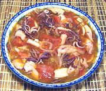

|
Squid AdoboPhilippine - Adobong Pusit | ||||
| Serves: Effort: Sched: DoAhead: |
4 w/rice *** 1 hrs Most |
An interesting and popular squid stew, mildly tart, as many Philippine dishes are. If you buy trays of frozen squid tubes and tentacles you can take a half hour off the prep work time. | |||
|
2 ------ 3 1/3 1/4 1-1/2 1/4 1 1 ------ 7 12 3 |
# --- cl c c t t t t --- oz oz T |
Squid, small (1) -- Marinade Garlic Vinegar (2) Water Salt Pepper, black Sugar Bay Leaf ---------- Onion Tomatoes Oil |
Prep - (1-3/4 hr - 45 min work)
|